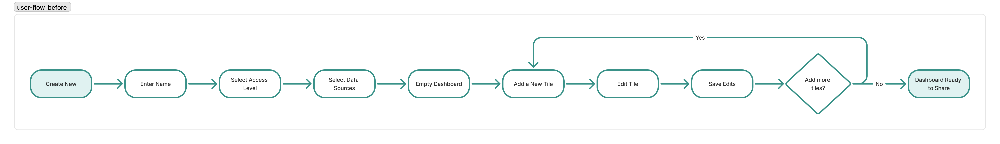
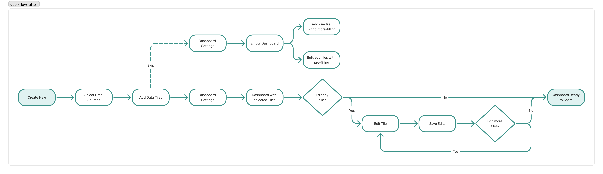
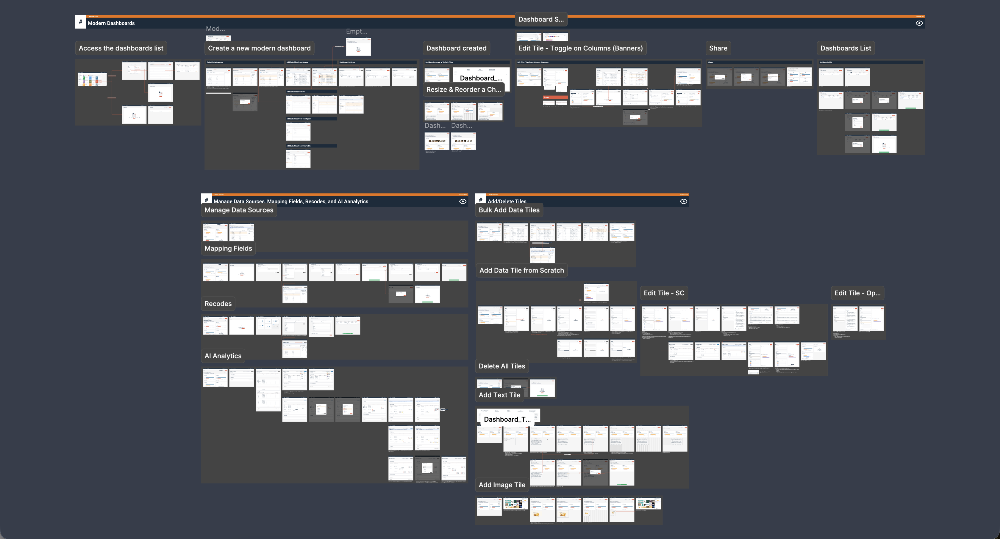

Research Community Platform · Dashboard
Revamped Dashboard Experience
Replacing a data-analyst tool with a researcher-friendly dashboard.

Final dashboard with mixed tile types.
A Looker-based legacy dashboard built for data analysts, used by researchers who don't think like analysts.
A guided creation flow, researcher-friendly tile configurations, and familiar functions they've been using in survey reports.
Received positive customer reception during prototype walkthroughs. Besides, the Figma-to-Cursor workflow became a shared team resource.
Context
User pain point
Most of our users are not SQL writers. The Looker-flavored interface forced them to learn data-analyst concepts just to configure a tile.
Business objective
Legacy dashboards were being deprecated. The new dashboard had to run on the new reporting architecture and also support multi-source data.
Process
Collaborating with PM and engineering leads, we addressed user pain points, translating frustration into the foundation of the new design.
User flow — dashboard creation


- Efficiency: Drastically reduces "Time to Dashboard," making the dashboard easier to set up.
- Reduced Friction: Automated pre-filling eliminates the need for manual tile configuration, saving significant user time.
- Flexibility: Prevents setup fatigue by allowing users to add or modify tiles at any stage with the same assistance.
Moving technical complexity behind the UI
When selecting data sources, I had to bridge the gap between a strict backend logic and the simplified experience.
The Challenge: Backend logic required users to manually designate a "primary source" when pulling from multiple data streams. Feedback from customer interviews showed that the initial design using UI copy and a default selection didn't resolve the underlying conceptual friction.
The Strategy: I led a cross-functional conversation with PM and engineering leads to analyze every valid use case. We discovered that "A data field stored against a member — demographics, behavioral data, or custom business-specific attributes. Used for targeting, segmentation, and analysis." were the logical primary source for all core scenarios.
The Pivot: We identified that the only "edge case" requiring a different primary source (external-only data) fell outside our product scope. By focusing on our core audience, we decided to automate the selection.
The Result: I eliminated a major friction point, allowing users to complete the flow without needing to understand or configure complex backend requirements.
Users had to manually pick a "primary source" — a backend concept surfaced in the UI.
A data field stored against a member — demographics, behavioral data, or custom business-specific attributes. Used for targeting, segmentation, and analysis. are auto-set as the primary source; the decision is to remove it from the UI.
Streamlining tile creation
To lower the barrier for non-analysts, I redesigned the tile configuration flow to eliminate technical jargon like "dimensions" and "measures."
Automated Setup: Users simply select a survey question or A data field stored against a member — demographics, behavioral data, or custom business-specific attributes. Used for targeting, segmentation, and analysis.; the system then pre-fills essential parameters for the tile.
Simplified Configuration: Replaced legacy feature bloat with a curated set of essential tools, removing friction to significantly decrease time-to-insight.
Flexible dashboard layouts
Prototyping for Clarity: Developed a Cursor prototype for tile drag-and-resize and reordering, allowing the team to iterate rapidly and align with customers and engineers without relying on lengthy written documentation.
Design System Integration: Translated the Figma design system into Cursor rules. This established a shared resource for the design team.
Driving Alignment & Handoff
With 8–10 engineers building in parallel and a single designer holding the spec, undocumented details created a high risk of product drift. To mitigate this, I established alignment through two communication rhythms:
Comprehensive Kickoffs: I held two 1-hour kickoff calls with the full dev team. During these sessions, I anchored every conversation in the basic end-to-end workflow first, then branched into edge cases, ensuring every engineer saw the workflow as a user would before owning a piece of it.
Targeted Syncs: I maintained ongoing, small syncs with PM and engineer leads, scoped strictly to features currently in flight.

Figma design with annotations prepared for engineering handoff.